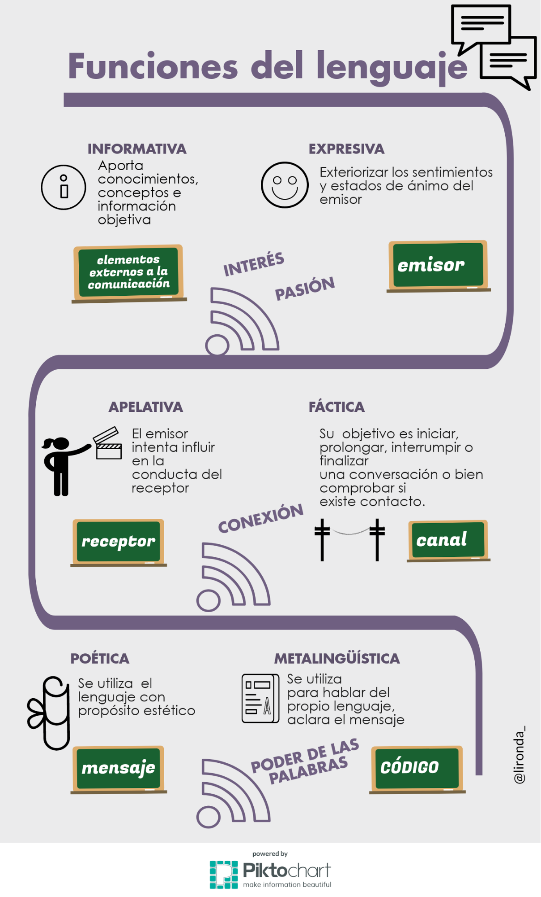

2 REPASAMOS Y REPENSAMOS LOS CONCEPTOS BÁSICOS SOBRE LENGUAJE Y COMUNICACIÓN
En El arte de hablar (2008) J.A. Hernández y M.C. García afirman que el ser humano y la vida social son lenguaje y por tanto, éste es el principal oficio de la mayoría de las profesiones: científicos, juristas, docentes, médicos, publicistas… todos estos profesionales son especialistas en la palabra con diferentes fines.
Podríamos decir que la labor de la asesoría de formación para el profesorado aúna todas estas profesiones que utilizan el lenguaje para narrar, describir, preguntar, persuadir, divulgar, acompañar emocionalmente, argumentar, etc.
Sin perder de vista la función asesora, recordemos las funciones del lenguaje y algunas de sus dimensiones psicológicas:
- Función informativa (referencial): aporta conocimientos, conceptos e información objetiva. Se emplea cuando pretendemos transmitir una información con objetivad.
Añadimos en primer lugar el presupuesto de que esta información ha de ser del interés para el receptor (debemos conocer las necesidades de los oyentes o ayudarles a detectarlas como trabajo previo) y, en segundo lugar, nuestro deseo de valoración y comprensión del mensaje. Para ello, deberemos relacionar “lo desconocido con lo conocido, lo extraño con lo familiar, lo ajeno con lo propio. Demostrar es mostrar; es desvelar, es descubrir, iluminar: es acercar una realidad al área de visión, al campo de la comprensión” J.A Hernández y M.C. García (2008).
C. Anderson (2016) en su libro Charlas Ted utiliza la charla de F. Gilbert “La sorprendente ciencia de la felicidad” para ejemplificar los elementos clave para que un mensaje informativo sea eficaz:
- Comenzar desde el lugar en el que está el receptor.
- Activar la curiosidad.
- Presentar los conceptos ordenadamente.
- Usar metáforas.
- Usar ejemplos.
- Función expresiva (o emotiva): manifiesta emociones, sentimientos, sensaciones. Como ya sabemos, siempre va acompañada del lenguaje no verbal y éste será el encargado de dar las claves sobre su veracidad al receptor. Vive las emociones que quieras hacer vivir a tu audiencia. Pon las neuronas espejo de tu audiencia a trabajar.
- Función apelativa: consiste en llamar la atención del otro e influir en su opinión o generar un cambio. En nuestro caso, solicitar participación durante el acto comunicativo, llamar la atención, obtener una actitud de respeto e interés hacia nuestro mensaje y una disposición del público a “llevarse” nuestro mensaje en forma de idea, de información aplicable en el aula, de perspectiva...
La estrategia fundamental, en nuestro caso, es la honestidad, el reconocimiento de fortalezas y debilidades tanto del propio orador como de la audiencia además de subrayar los valores de la propuesta que se trae.
Chris Anderson (2016) , director de TED, apela a la “conexión” como herramienta necesaria para contar con el permiso de la otra persona para construir una idea en su mente. Para ello, sugiere:
- Contacto visual desde el principio, sonrisa serena.
- Muestra vulnerabilidad, dentro de unos límites, no finjas. Tu interlocutor valora tu autenticidad no que seas la perfección hecha persona. Deja a un lado tu ego.
- Utiliza el humor si es uno de tus puntos fuertes, pero si no es tu estilo, no lo fuerces: hay otras formas de conectar.
- Cuenta una historia, instantáneamente suscitan interés, emoción, intriga.
La conexión entra en relación también con la siguiente función:
Función fática: mensajes que cuyo fin es establecer la comunicación, mantenerla y cerrarla adecuadamente. No es un simple ¿me sigues? se trata de conectar, de responder a las expectativas, de asegurar que el público te acompaña en tu viaje. Escucha activa y empática son claves en este caso.
Función poética: implica que en la forma del mensaje haya una intención estética. Ésta influye en el ánimo del oyente.
Como asesores podemos valernos de la poética para crear slogans que se conviertan en el leitmotiv de nuestra ponencia o en un título atractivo. Los juegos de palabras “lo que no se evalúa se devalúa”, “si te atreves a enseñar nunca dejes de aprender”, las rimas “la emoción siempre gana a la razón”... no fallan, no se olvidan y además son fácilmente twitteables.
- Función metalingüística: se reflexiona sobre el propio lenguaje. Necesaria para generar reflexión, matizar... Por ejemplo: ¿en que se diferencia el “Aprendizaje basado en Proyectos” del “Aprendizaje por proyectos”?, ¿por qué no “Enseñanza basada en Proyectos”?

J.A. Hernández y MC García (2008) dicen “para ampliar nuestro inventario de recursos expresivos y persuasivos -para despertar el interés de los oyentes, mantener su atención, moverlos y conmovernos, persuadirlos y disuadirlos, acusarlos y defenderlos- hemos de pedir ayuda a la diferentes Ciencias Humanas y, en especial a la Antropología, Filosofía, Lingüística, Semiótica, Poética y Didáctica” esta variedad de fuentes de la oratoria, a las que añadimos las Psicología y la Sociología, refuerzan la idea de que en el arte de hablar con elocuencia, de comunicar eficazmente, confluyen de manera coherente lo que se sabe, lo que se siente y lo que se hace.
Recordemos, antes de continuar, una adaptación del consabido mapa conceptual de una situación comunicativa (basado en el modelo de R. Jakobson)
Si pensamos en la función de la asesoría de formación para el profesorado, debemos tener en cuenta que a lo largo de este módulo podemos utilizar los siguientes términos para referirnos a los elementos del acto comunicativo:
Emisor = persona que ejerce la labor asesora o formativa.
Receptor = oyentes, público, auditorio, interlocutor, docentes, familias...
Acto comunicativo = charla, entrevista, ponencia, mesa redonda, discurso, clase, presentación…
En el Centro Virtual Cervantes, en su diccionario de términos clave de ELE, encontramos definido el Principio de Cooperación que rige el intercambio comunicativo. Este principio establece tres máximas:
- Cantidad: haz tu contribución sea tan informativa como se requiera y no más
- Calidad: tu contribución debe ser verdadera. No digas lo que crees que es falso ni aquello sobre lo que no tienes pruebas.
- Relación: sé pertinente y relevante
- Manera: claridad, brevedad y orden. Evitar la ambigüedad y la oscuridad en la expresión.
Volviendo al lema de este módulo “en comunicación no hay normas de oro”, si queremos ser buenos comunicadores no podemos tomarnos este principio como una norma inquebrantable. Sin quebrantar la máxima de calidad, no habría ironía, por ejemplo.
“La transgresión de alguna máxima del Principio de Cooperación supone la transmisión, generalmente consciente, de una información concreta, de un significado añadido al literal o explícito del enunciado”, “ el proceso comunicativo del uso de la lengua es un proceso de interpretación de intenciones que se lleva a cabo poniendo en relación, siempre mediante el Principio de Cooperación, la información explícita de los enunciados que se emiten -el significado léxico-semántico o literal- con la información implícita o contextual que se deriva de los enunciados que se producen. Cuando en un intercambio lingüístico falla la comunicación (...) es porque no comparten la misma información contextual” Susana Luque (2000) en La expresión oral.
A este cuadro teórico también vamos a añadir los axiomas de la comunicación enunciados por Paul Watzlawick.
- No es posible no comunicarse.
- Toda comunicación tiene un nivel de contenido (referencial) y otro relacional (conativo)
- La relación comunicativa depende de cómo los participantes “puntúan” la secuencia de la comunicación. Una respuesta no es consecuencia de una información inmediatamente anterior sino de las comunicaciones previas, de la puntuación interpretación de la secuencia de interacciones.
- Existen dos niveles de comunicación: verbal (digital) y no verbal (analógica).
- La comunicación entre personas puede tener carácter simétrico (de igualdad) o complementario (desigualdad entre las partes).
La oratoria es un arte “en vivo y en directo”, se da en un momento único e irrepetible. La eficacia y la eficiencia de la comunicación dependerá de nuestra destreza para conseguir que los elementos y las normas vistas hasta ahora trabajen a nuestro favor y también de nuestra capacidad de adaptación y flexibilidad. “El saber hablar bien es un saber estratégico, tanto desde el punto de vista lingüístico como social. Por tanto no se adquiere, no se hereda, sino que se aprende.” Antonio Briz et al. (2008).